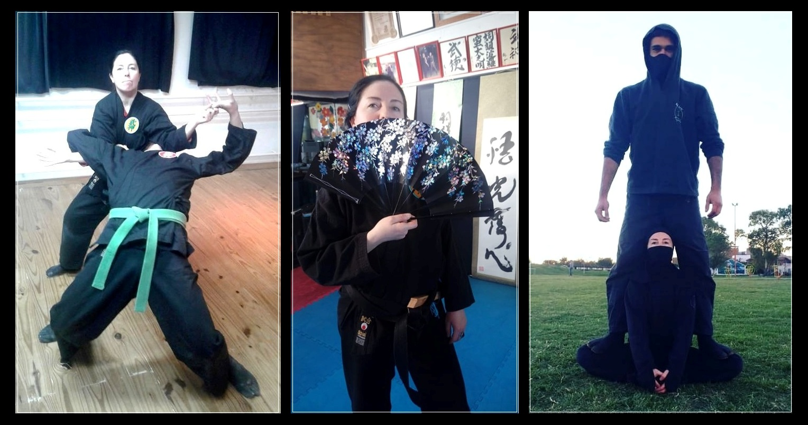
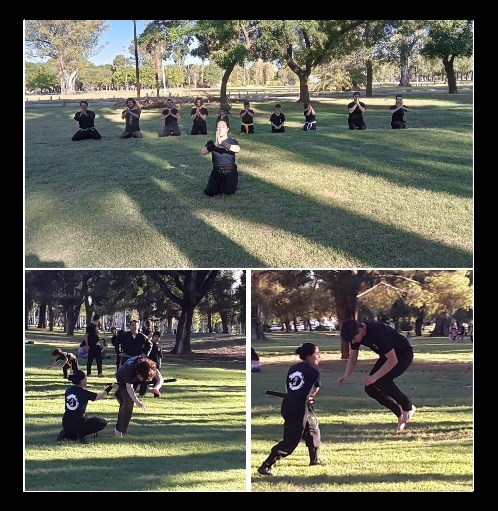
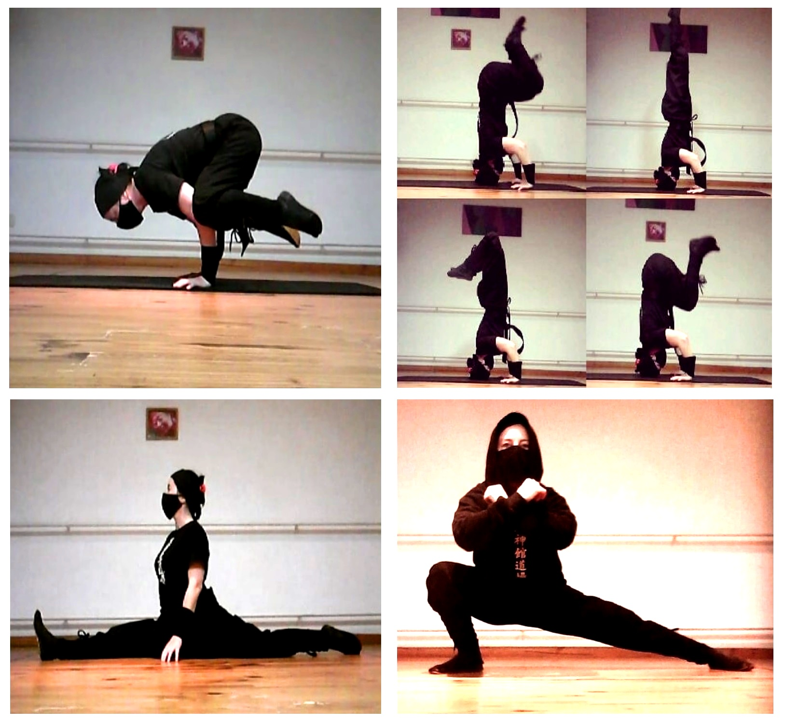
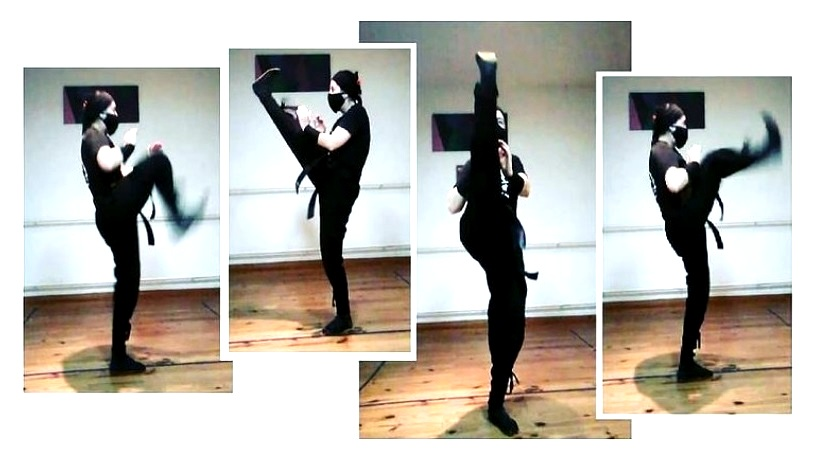

BUJINKAN NINGENSEI DŌJŌ
Bahía Blanca, Provincia de Buenos Aires, Argentina

Shihan Patricia Guillermina Leal, 19 años de experiencia marcial en Bujinkan Dojo
Alumna del Dai Shihan Juan Manuel Gutierrez


NINGENSEI: “Una de las cosas más bellas en un ser humano es la habilidad de cuidar y amar, querer proteger y la habilidad de proteger. En japonés esto se llama ningensei.” Masaaki Hatsumi Sensei

El entrenamiento marcial implica:
- Acondicionamiento físico: desarrollo de flexibilidad, fortaleza física, resistencia, equilibrio, reflejos, agilidad, destreza, refinamiento de los sentidos
- Aprendizaje de técnicas tradicionales sin armas
- Aprendizaje de manejo de armas
- Aplicación estratégica en combate real
- Desarrollo del propio estilo de combate fundado en los conocimientos adquiridos (Taijutsu libre)
- Entrenamiento mental, de los sentidos sutiles como la intuición y desarrollo espiritual
- Filosofía y conocimientos de historia y cultura japoneses en relación al arte

Dojo es el espacio de entrenamiento y aprendizaje del budoka (practicante de artes marciales). Es el lugar del Camino donde cada estudiante de Budo (camino marcial) encuentra su propio camino personal.